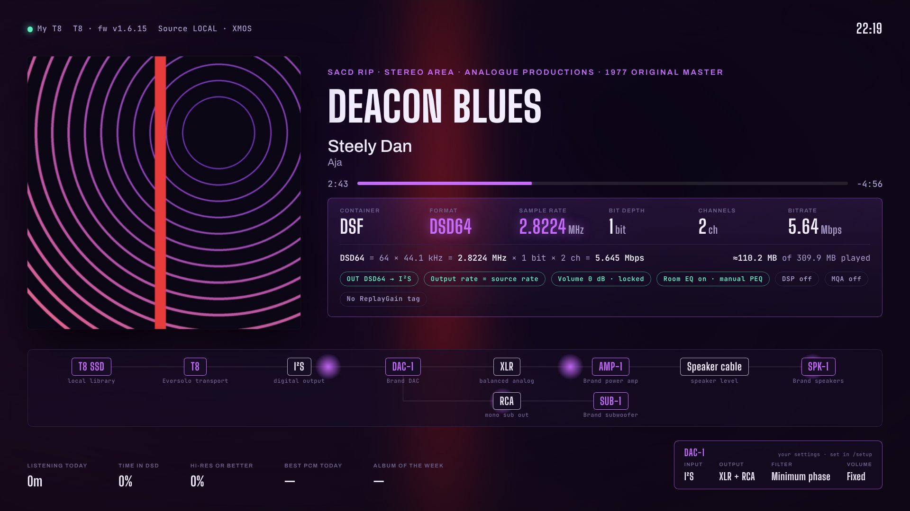

T8 HUD setup
Changes here only affect what the TV shows. Nothing is ever sent to the T8. Press Save and every screen updates within a second.
Open this on your TV
Type this into your TV's (or tablet's) web browser. It's this computer's address on your home network.
Your T8
Sources
The T8 reports a short code for where the music comes from, such as LOCAL. Give each code a friendlier name for the top bar. Codes appear here once the T8 has played from them.
EQ
The T8 only reports whether its EQ is on or off, nothing about the EQ settings. The chip shows that: “EQ on” or “EQ off”. You can rename “EQ” and add a short note of your own.
Look
One colour for the highlights, the progress bar and the telemetry frame, whatever the format.
Extras (preview): signal chain, DAC window, listening stats
These are early previews and are off by default. The standard screen is cover art plus live telemetry from the T8. Switch any of these on if you want them.

Signal chain
Your gear after the T8. Each box shows the model, with brand + type underneath, exactly as you type them. Add connections (XLR, RCA, speaker cable…) between boxes to show off how it’s all wired.
DAC window
A small panel on the TV for settings your DAC can’t report itself (the Eversolo DAC-Z10 has no network API). Set them once; the panel is labelled “your settings” so nobody mistakes it for live data. Up to 8 rows.
Extras on the TV
Format colour changes with the track (purple for DSD, cyan for hi-res and so on). Beads always flow faster as the bitrate goes up; speed scales that. Untick the beads for a still diagram.